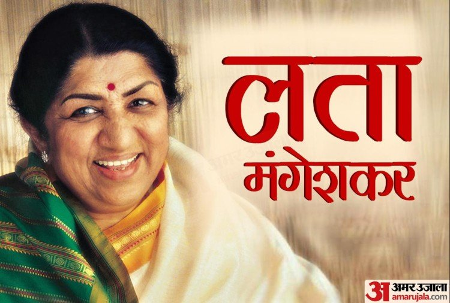

Lata Mangeshkar ji

A short Biography of Lata Mangeshkar ji
- Lata Mangeshkar (born as Hema Mangeshkar;28 september 1929-6 February 2022)
- Lata Mangeshkar Ji was born in a Maharashtrian Brahmin family.
- Her father, Deenanth Mangeshkar, was a classical singer and theatre actor.
- Her mother, Shevanti(later renamed Shudhamati), a Gujarati woman from Thalner, Bombay Presidency (now in northwest Maharashtra), was Deenanath's second wife.
- She was an Indian playback singer and occasional music composer
- Lata Mangeshkar Ji recieved her first music lesson from her father.At the age of five, she started to work as an actress in her father's musical plays.
- She was the eldest child in the family.
- She moved to Mumbai in 1945 when Master Vinayak's company moved its headquarters there.
- she is widely considered to have been one of th gratest and most influential singers in india.
- Lata Mangeshkar composed music for the first time in 1955 for the Marathi movie Ram Ram Pavhane.
- She won Maharashtra State Goverment's Best Director Award for the film Sadhi Manase. The song "Airanichya Deva Tula" from the same film recieved best song award.
- Lata Mangeshkar Ji has produced four films.
- On 8 January 2022, Lata Mangeshkar tested positive for COVID-19 with mild symptomps and was admitted to Breach Candy Hospital's intensive care unit in Mumbai.
- Lata Mangeshkar recorded songs in over thirty-six Indian languages and a few foreign languages,though primarily in Hindi,Bengali,and Marathi.
- She also sang in English,Russian,Dutch and even swahilli.
- She recieved serveral accolades and honors throughout her carrer.in 1989 the Dadasaheb Phalke Award was bestowed on her by the Government of India.
- In 2001, in recognition of her contributions to the nation, she was awarded the Bharat Ratana, India's highest civilian honour; she is only the second female singer, after M.S. subbulakshmi, to recieve this honour.
- She was the recipient of three National Film Awards, 15 Bengal Film Awards, four Filmafare Best Female Playback Awards, two Filmfare Special Awards, the Filmfare Lifetime Achievement Awards and many more.
- In 1974, The Guinness Book of Records listed Mangeshkar as the most recorded artist in history, stating that she had reportedly recorded "not less than 25,000 solo,duet and chorus backed songs in 20 Indian languages" between 1948 and 1974.
- In 1974, she was one of the first Indian playback singers to ever perform at Royal Albert Hail in London, UK.
- Her last recorded song was a rendition of the Gayatri Mantra at Mukesh Ambani's daughter Isha Ambani's wedding.
- At one point, she appeared in the Guinness World Records which listed her as the most recorded artist in history between 1948 and 1987.
- Lata Mangeshkar Ji died from multiple organ dysfunction syndrome on 6 February 2022, at the age of 92. She had undergone 28 days of constant treatment for pneumonia and COVID-19.
- The Goverment of India announced a two-day period of national mourning and that the national flag will fly at half-mast from 6 to 7 February throughout India out of respect for her.
"You Will Be Missed"